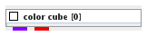
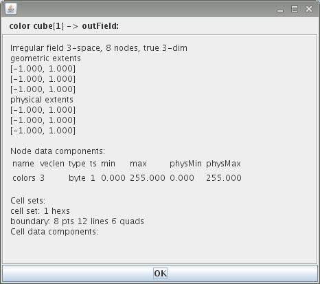
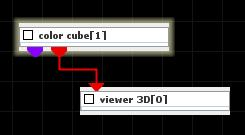
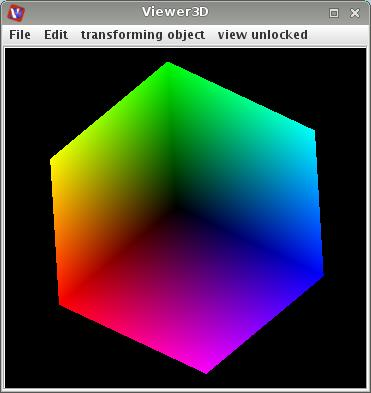

A node colored cube for explanation of colorspaces
| input port | type | description | data acceptors |
|---|---|---|---|
| output port | type | description | data schemas |
| outField | VNIrregularField | Field 3-space |
|
| outObj | VNGeometryObject |
COLOR CUBE
The color cube module outputs a colored cube for explanation of colorspaces.
Output data
At output there is a field of 8 nodes defining the colored cube, and a geometry object.

Presentation parameters
Presentation parameters are described in the common interfaces section under the Presentation Panel entry.
Example

Choose color cube module from test objects library i connect the module to the viewer 3D. In the color cube module GUI choose unshaded surface.
